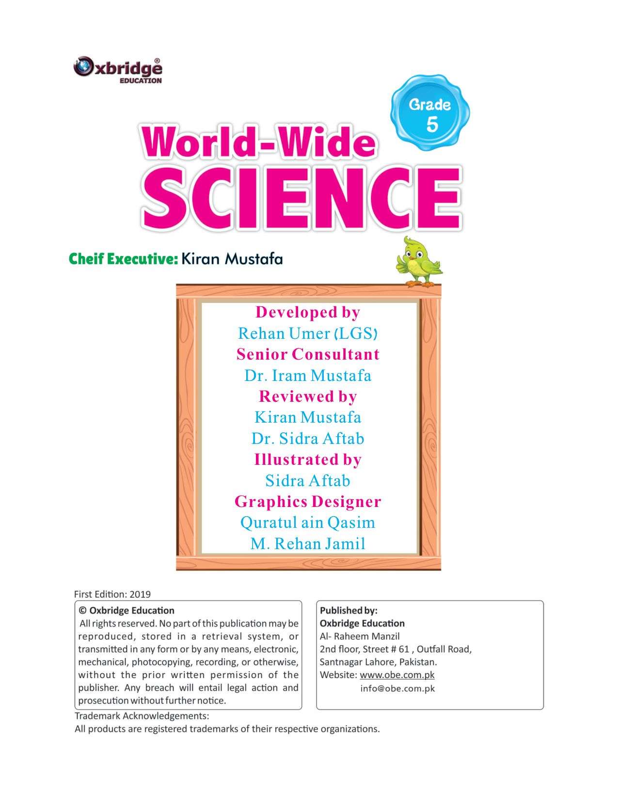

OXBRIDGE MM SERIES
World-Wide Science — Grade 5
The complete book, free to read online — page by page.

88 Pages
10 Units
103 Topics
📖 Read the Book — Free
Units in This Book
UNIT 1
Classification of living things
11 topics
UNIT 2
Microorganisms
7 topics
UNIT 3
Flowers and seed
11 topics
UNIT 4
Environmental pollution
7 topics
UNIT 5
Physical and chemical changes of matter
7 topics
UNIT 6
Light and sound
18 topics
UNIT 7
Electricity and magnetism
14 topics
UNIT 8
The structure of the Earth
8 topics
UNIT 9
Space and satellites
7 topics
UNIT 10
Technology in everyday life
13 topics